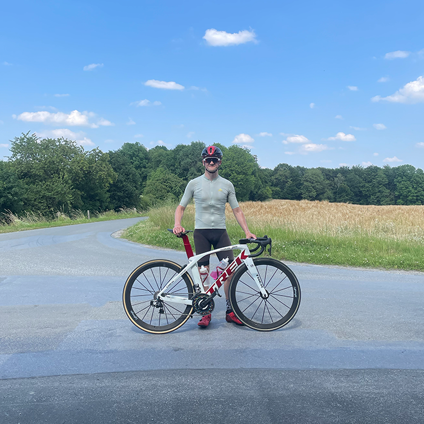

Фритрек и нулевой спринт: Подготовка к работе

</html>
Это было самое начало пути. На этом этапе важно было проникнуться
основами и настроиться на учёбу. И, возможно, подумать, как новые
знания могут повлиять на ваше будущее.
Настрой, настрой, настрой! Только учёба! Но в итоге познакомился с
Ё-моё и излишне серьёзный подход сменил продуктивно-творческий.
1 спринт: Я — чистый лист
</html>
На первых этапах мы работали со страхами и сомнениями, которые
часто испытывают новички. Один из них — страх перед чистым листом.
Это, конечно же, намного сложнее, чем боязнь куска бумаги. Часто
за этим ощущением скрываются более глубокие вопросы: с чего
начать? а вдруг будет слишком сложно? что, если я не справлюсь?
Время за учёбой пролетало незаметно, заметным становилось
беспокойство: "Успею ли в срок?".
1 спринт: А если не получится?
</html>
Первый проект — позади! Но это всё ещё самое начало пути. Радость
могла быстро померкнуть и смениться ожиданием провала. Или вы,
наоборот, могли вдохновиться успехами и поверить в себя.
Первый ориентир по времени получен, есть из чего исходить в
следующем спринте.
2 спринт: Погоня за идеалом
</html>
На этом этапе вы уже достаточно разбирались в основах вёрстки,
чтобы понять, как много ещё впереди. Вы могли попытаться погнаться
за идеалом и понять, что он недостижим. А, может, вы вовсе и не
подвержены перфекционизму и вместо того, чтобы сделать идеально,
старались просто сделать.
Марафон с бесчисленными попытками подогнать текст к макету, только
чтобы потом вздохнуть, узнав о том, что расхождения здесь
нормальны и даже неизбежны.
2 спринт: О тех, кто рядом
</html>
Всё это время вы были не одиноки (хотя, возможно, иногда и
чувствовали, что одни против целого мира). Вас окружали
одногруппники, команда сопровождения и просто близкие люди,
которым можно пожаловаться, если очередной макет просто так не
поддавался. Осваивать что-то новое легче, когда рядом есть
единомышленники, не правда ли?
Группа в телеге оказалась источником полезных активных контактов,
Пачка больше служила для инфо-поводов и изучения ошибок у других
одногруппников.
3 спринт: Обходные стратегии
</html>
На этом курсе вы постоянно решали разные задачи. В какой-то момент
вам могло показаться, что решения просто иссякли. Значит, пришло
время посмотреть на задачу под другим углом.
Иногда спасало "Может решение мне приснится?", иногда просто смена
занятия на пару минут.
3 спринт: Когда опускаются руки
</html>
Во время учёбы часто возникает чувство, когда не знаешь, за что
хвататься. Вроде и проектную пора сдавать, и задачи хочется
порешать, и в теории получше разобраться, и жизнь не забыть
пожить. В такие моменты очень нужна концентрация. Вспомните,
откуда вы её черпали.
"Ушёл в себя и не вернулся" - такой подход оказался не верным,
баланс во всём помог больше всего.
«Сейчас я здесь»
</html>
Сейчас вы уже очень много знаете о вёрстке. Но это только начало.
Во-первых, впереди ещё много материала про «красотищу». Во-вторых,
с окончанием курса учёба не заканчивается. Вёрстка — это целый
мир. И этот мир постоянно меняется. Познать его полностью не
получится, но это тот случай, когда важен сам процесс познания.
Ведь часто путь — и есть результат.
Было всего 4 работы с полезными указаниями, нужно автономизировать
процесс дополнительными проектами.